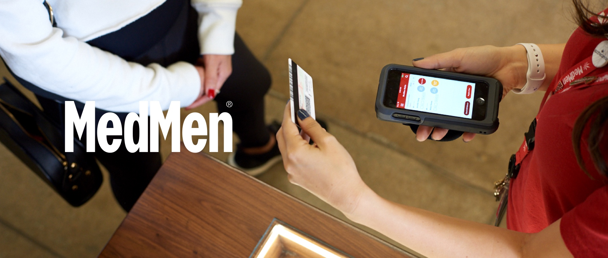
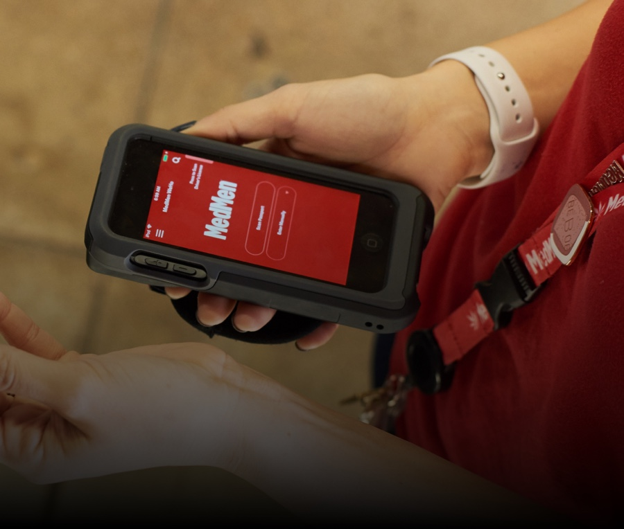

portfolio - New
Point Of Sale
MedMen POS System
Since Marijuana has been legalized for recreational purposes in certain states, everyone can shop at MedMen store. However, Maijuana industry don't have any technoloty system from registration to checkout. Therefore, customers have to fillout their information on the paper to go into the store. It should be definatly inconvenience expereince before shopping. Executive team requested me to create new POS with new UI Design and more user friendly UX. Eventually, customer can go into any MedMen store in 1 minute.